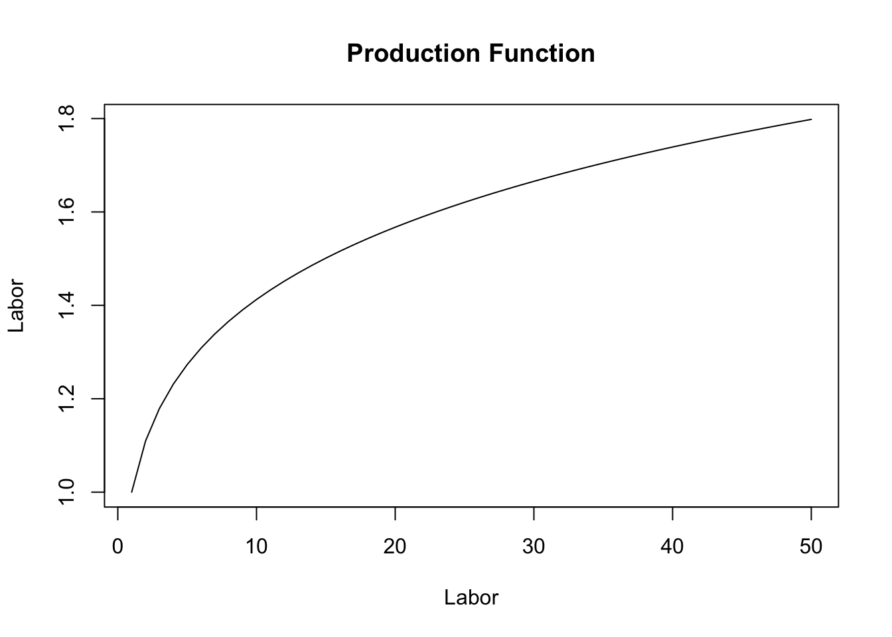
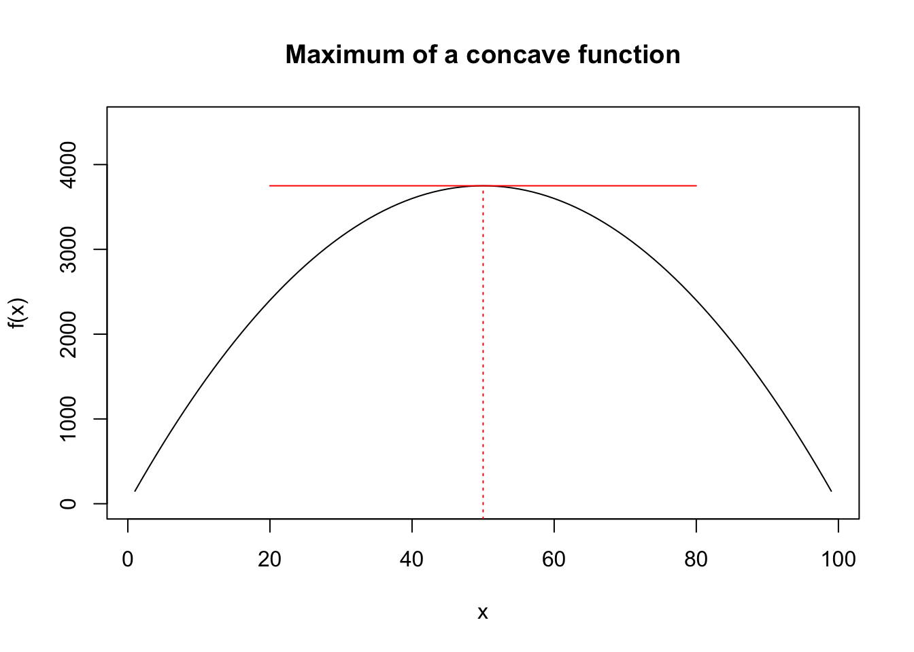

A Review of Differential Calculus and Optimization
Given that all students must have taken a course in calculus before enrolling for this class, it is assumed that everyone in the class is comfortable with concepts such as derivatives, partial derivatives, and optimization. In this chapter, I will provide a brief review of some concepts that are most pertinent for Econometrics. I strongly encourage that you read your lecture notes for Calculus if you find it difficult to follow the material presented in this chapter.
A.1 Derivative of a single variable function
Definition A.1 (Derivative of a function) Consider the following function, \(y=f(x)\). The derivative of this function measures the rate of change in \(y\) caused by a change in \(x\).
There are two alternative notations for the derivative of \(y\) with respect to \(x\): \(f'(x)\) or \(\displaystyle{\frac{dy}{dx}}\).
The derivative of a function is very closely related to the concept of slope of a function. Let \(\Delta\) denotes change in a variable. Then, by definition, the slope of \(y\) with respect to \(x\) is given by:
\[slope=\frac{\Delta y}{\Delta x}\]
The derivative of \(y\) with respect to \(x\) is the limit value of the slope as \(\Delta x \rightarrow 0\). Hence, \[\frac{dy}{dx} \ or \ f'(x)=\lim_{\Delta x \to 0} \left( \frac{\Delta y}{\Delta x}\right) \]
A.1.1 Rules of Differentiation
Derivative of a constant is \(0\).
Derivative of a function multiplied by a constant is constant times the derivative of the function:
\[\frac{d}{dx} [\ a\times f(x)]=a\times f'(x)\]
where it is assumed that \(a\) is an constant.
- Addition rule:
\[ \frac{d}{dx} [f(x)+ g(x)]=f'(x)+ g'(x) \]
- Subtraction rule:
\[ \frac{d}{dx} [f(x)- g(x)]=f'(x)-g'(x) \]
- Product rule:
\[ \frac{d}{dx} [f(x)\times g(x)]= f(x) \times g'(x) + g(x)\times f'(x)\]
- Quotient rule:
\[ \frac{d}{dx} \left[\frac{f(x)}{g(x)}\right]=\frac{f'(x) \times g(x) - g'(x) \times f(x)}{g(x)^2}\]
- Chain rule:
\[ \frac{d}{dx} [f(g(x))] = f'(g(x)) \times g'(x)\]
Derivative of some common functions:
Power function: \(f(x)=x^a\). Then, \[f'(x)=a \times x^{a-1}\]
Natural log function: \(f(x)=ln(x)\). Then, \[f'(x) = \frac{1}{x}\]
Exponential function: \(f(x)=e^x\) \[f'(x)=e^x\]
A.2 Second derivative and non-linearity
Definition A.2 (Second derivative of a function) Consider the following function, \(y=f(x)\). The second derivative of this function measures the change in the rate of change of this function. Formally it is denoted by \(f''(x)\) or \(\displaystyle{\frac{d^2y}{dx^2}}\).
The second derivative measures the curvature of the function and hence can be used to distinguish a linear function from a non-linear function. By definition, a linear function has a constant slope implying the its second derivative must be zero.
Example A.1 For example, consider the following linear function:
\[f(x) = mx +b\]
Here\(f'(x)=m\) and \(f''(x)=0\).
A non-linear function will have a non-zero second derivative. There are only two possibilities:
- \(f''(x)<0\). In this case we have a concave relationship. An example from economics is the production function where the relationship between output and input is concave.

- \(f''(x)>\). In this case we have a convex relationship. An example from economics is the marginal cost function where the relationship between cost of production and level of output can be convex.
A.3 Partial derivatives: Multi-variable functions
Ceteris paribus aka holding other things equal is one of the key concepts used in Economic analysis. A partial derivative is a mathematical counterpart of this assumption.
Definition A.3 (Partial Derivative) Consider a function of n-variables given by \(y=f(x_1,x_2, x_3,...,x_n)\). Then, there are n partial derivatives of this function that can be obtained by taking derivative with respect to one of the \(x\)-variables, holding all other constant. Formally, the partial derivative of \(y\) with respect to \(x_i\) is denoted by \(\displaystyle{f_{x_i} \text{or} \frac{\partial y}{\partial x_i}}\).
Example A.2 Consider the following 3-variable function:
\[y=ln(x_1)+x_1\times x_2+3x_2^2 + x_1 \times x_3 + ln(x_3)\]
Then we can compute three partial derivatives of this function:
Partial derivative of \(y\) with respect to \(x_1\), treating \(x_2\) and \(x_3\) as constants: \[\frac{\partial y}{\partial x_1} = \frac{1}{x_1} + x_2+x_3\]
Partial derivative of \(y\) with respect to \(x_2\), treating \(x_1\) and \(x_3\) as constants: \[\frac{\partial y}{\partial x_2} = x_1+6x_2\]
- Partial derivative of \(y\) with respect to \(x_3\), treating \(x_1\) and \(x_2\) as constants: \[\frac{\partial y}{\partial x_3} = x_1+ \frac{1}{x_3}\]
Example A.3 (Cobb-Douglas Production Function) One of the most used functional form for the production function is the Cobb-Douglas production function. Suppose you have two inputs: labor (L) and capital (K). Let Y denotes output. Then, the Cobb-Douglas production function is given by:
\[Y=L^{\beta_1}K^{\beta_2}\]
Now, output can change because we change our labor input or our capital input. In each case, we are thinking about a change in output caused by change in one input, holding the other input constant. This is exactly what a partial derivative captures! In what follows next we will use two mathematical concepts to further our understanding of economics of production:
- Change in natural logs of a variable approximates percent change in that variable. Formally, \(\Delta ln(x) \times 100 \approx \text{\% change in x}\). Hence, it is often useful to express economic relationships in natural logs. The Cobb-Douglas production function in natural logs is given by:
\[ln(Y)=\beta_1 \times ln(L) + \beta_2 \times ln(K) \]
The partial derivative of the above equation gives us elasticity of output with respect to each input.
Output elasticity of Labor: \[\frac{\% \ \text{change in Y}}{\% \ \text{change in L}} = \frac{\partial ln(Y) \times 100}{ \partial ln(L) \times 100}=\beta_1\]
Output elasticity of Capital: \[\frac{\% \ \text{change in Y}}{\% \ \text{change in K}} = \frac{\partial ln(Y) \times 100}{ \partial ln(K) \times 100}=\beta_2\]
Note that we can also infer whether production is subject to increasing, decreasing, or constant returns to scale from the numerical values assigned to \(\beta_1\) and \(\beta_2\). Returns to scale is simply the sum of output elasiticities with respect to labor and capital:
\[\text{Returns to scale}= \frac{\% \ \text{change in Y}}{\% \ \text{change in L}}+\frac{\% \ \text{change in Y}}{\% \ \text{change in K}}=\beta_1+\beta_2\]
Hence, we obtain constant returns to scale as long as \(\beta_1+\beta_2=1\). We get decreasing returns to scale if \(\beta_1+\beta_2<1\). Finally, increasing returns to scale require \(\beta_1+\beta_2>1\).
A.4 Optimization
In Economics it is often assumed that rational individuals optimize. For instance, firms seek to maximize profits (or minimize costs) and households seek to maximize utility. Mathematically, this is equivalent to finding extreme values of an objective function.
Example A.4 Consider a firm that is choosing a level of output \((q)\) to maximize its profits. By definition, profits are total revenue \(R(q)\) minus total cost \(C(q)\). The resulting profit function \(\pi(q)\) is the firm’s objective function and \(q\) is the control variable:
\[\pi(q)=R(q)- C(q)\]
The firm will choose a value of \(q\) that will maximize its profits. Mathematically, this can be written as:
\[ \max_{q} \pi(q)\]One way to solve this problem, is to assume a functional form for profits and evaluate this function for all possible values of \(q\). Then, select the value of \(q\) that yields highest value for profits. This approach is called numerical optimization and is often used for complicated objective functions. But in many cases, we can use calculus and obtain an analytical solution for the optimization problem.
Formally, suppose the objective function is denoted by \(f(x)\) and assume that this function is continuous and twice differentiable. Then,
- \(x^*\) is a maximizer if \(f(x^*)\geq f(x)\) for all \(x\neq x^*\). Note that at this point the slope of the tangent to the function is \(0\), i.e., \(f'(x^*)=0\). This is the first order condition (foc) for obtaining a maximum. The graph below illustrates the maximum of a generic function. Note that the slope of the function changes sign from positive to negative around \(x^*\). This will give us the second order condition for obtaining a maximum.

- \(x^*\) is a minimizer if \(f(x^*)\leq f(x)\) for all \(x\neq x^*\). Note that at this point the slope of the tangent to the function is \(0\), i.e., \(f'(x^*)=0\). This is the first order condition (foc) for obtaining a minimum. The graph below illustrates the minimum of a generic function. Note that the slope of the function changes sign from negative to positive around \(x^*\). This will give us the second order condition for obtaining a minimum.

Note for a maximum, Similarly, . We can now outline the steps for computing a maximum or minimum of a given function.
- First-order condition: Compute the first derivative of the function and equate it to 0. The solution to this equation gives us \(x^*\):
\[ f'(x^*) = 0\]
Second-order condition: Compute the second derivative of the function and evaluate it at \(x^*\).
If \(f''(x^*) < 0\), then \(x^*\) is a maxmizer.
If \(f''(x^*) > 0\), then \(x^*\) is a minimizer.
Solution. The profit of a firm is revenue minus cost:
\[\pi(q)= R(q) -C(q)= 5q-2q-5-0.1q^2=2q-5-0.1q^2\]
Hence, we want to solve the following problem: \[\max_{q} \pi(q)\]
The first order condition is given by:
\[\pi'(q)=0 \Rightarrow 2-0.2q=0 \rightarrow q^*=10 \]
The second order condition is given by: \[\pi''(q)=-0.2<0\]
Hence, \(q^*=10\) maximizes the profits. The maximum level of profits is given by \(\pi(q^*)=2\times 10-5=0.1\times 10=5\).
Note that the above process can be easily applied to multivariable functions. In that case there will be one first order condition for every control variable.
Example A.6 (Multi-variable optimization example) Consider a two-variable function:
\[f(x_1,x_2)=2x_1x_2 + \frac{100}{x_1} - 4x_2^2\]
Solve the following minimization problem:
\[\min_{x_1,x_2} f(x_1,x_2)\]
Solution. Now we have two first order conditions:
\[f_{x_1}(x_1,x_2) = 0 \Rightarrow 2x_2 -\frac{100}{x_1^2}=0\]
\[f_{x_2}(x_1,x_2) = 0 \Rightarrow 2x_1 -8x_2=0\]
Problems
Exercise A.1 Compute the derivative of the following functions.
\(f(x)=2x^2\)
\(f(x)=2x^2+ ln(x)\)
\(f(x)=e^{ax}\)
\(f(x)= (2x+x^2)^3\)
\(f(x)= ln(5x+x^2)\)
- \(f(x)= \displaystyle{\frac{x+ln(x)}{x^3}}\)
Exercise A.3 Compute the partial derivative for each variable for the following functions:
\(f(x_1,x_2,x_3)=4x_1^3x_2-e^{x_3}x_1+3 x_2\)
\(\displaystyle{f(x_1,x_2)=\frac{2x_1 +3x_2}{4x_1^3-7x_1x_2}}\)
\(\displaystyle{f(x, y)= ln(y^2)-ln(x)+2 ln\left(\frac{x}{y}\right)}\)
- \(f(x,y)=2x^{0.4} y^{0.8}+2x\)
Exercise A.4 Solve the following optimization problems. In each case compute the maximizer(s) (or minimizer(s)) for the function as well as the optimum value of the function.
\(\displaystyle{\max_x f(x) = 3ln(x) - 0.5x+4}\)
\(\displaystyle{\min_{x,y} f(x,y) = 2xy+\frac{2000}{x}+\frac{2000}{y}}\)
- \(\displaystyle{\max_x f(x) = ax^{0.5} - bx+4}\)